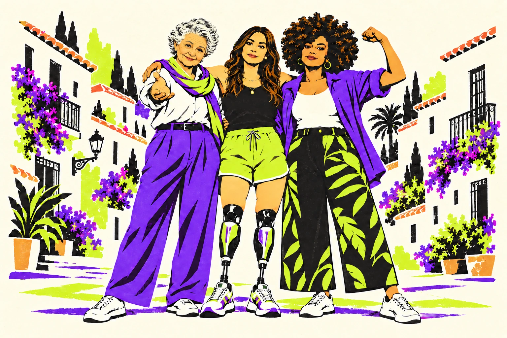
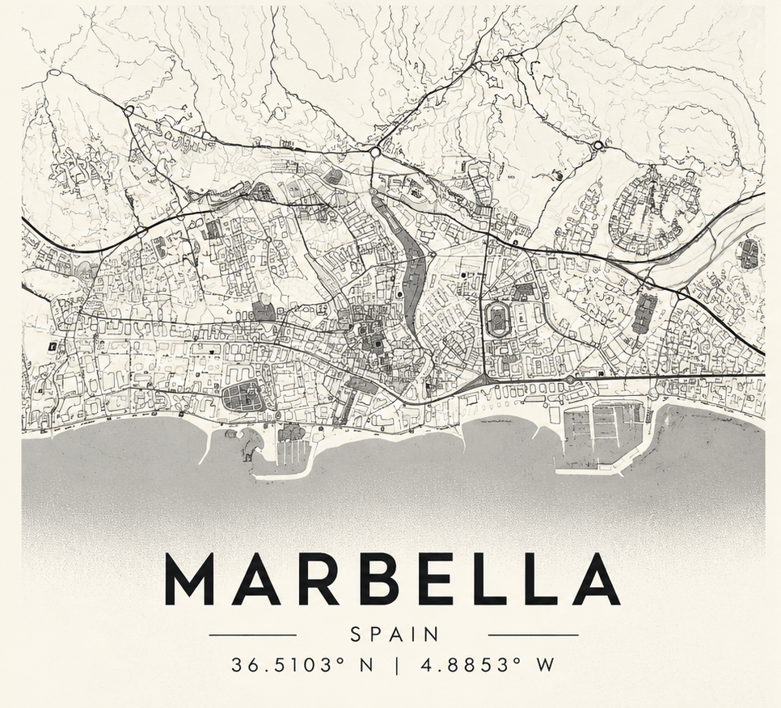

Mujeres y trabajo
Agricultura, comercio, estraperlo, cuidados, enfermería, actividades económicas y turismo.
La calle recuerda
13 paradas · 3 recorridos
Lugares, oficios y vidas de mujeres que forman nuestra ciudad. Explora sus huellas y descubre una Marbella más diversa.
Descubre sus huellas ↗Conocer sus historias →
Mi pasaporte de memoria13 historias · 13 sellos→
Vidas vinculadas a la ciudad
Conoce sus historias. Encuéntralas en la ruta.
Diseño, escritura y actividad empresarial
PARADA 02
Descubre su historia ↗Deporte femenino
PARADA 03
Descubre su historia ↗Participación política
PARADA 04
Descubre su historia ↗Cuidados y enfermería
PARADA 06
Descubre su historia ↗Cultura y acción social
PARADA 08
Descubre su historia ↗Cuidados y acción comunitaria
PARADA 09
Descubre su historia ↗Danza y cultura local
PARADAS 11 / 12
Descubre su historia ↗Cultura popular y memoria local
PARADA 12
Descubre su historia ↗Memoria del turismo
PARADA 13
Descubre su historia ↗Turismo y acción social
PARADA 13
Descubre su historia ↗Selección inicial del anteproyecto. Retratos y contenidos pendientes de validación documental. Las ilustraciones son provisionales y no representan a las mujeres mencionadas.
El proyecto propone reinterpretar el patrimonio histórico, social y cultural de Marbella recuperando las aportaciones de las mujeres y de colectivos invisibilizados.
Conecta los espacios urbanos con el trabajo, los cuidados, la cultura, el deporte, la participación política y las diversidades. Las 13 localizaciones del anteproyecto son el punto de partida de la investigación.
Adaptación web del anteproyecto de GENERA. No es una publicación oficial del Ayuntamiento. Los nombres, hechos históricos y vínculos concretos se contrastarán con la documentación del proyecto.
Agricultura, comercio, estraperlo, cuidados, enfermería, actividades económicas y turismo.
Plazas, fuentes, calles, mercados y espacios de decisión. ¿Qué lugar han ocupado las mujeres en la ciudad?
Cultura, política, deporte, emprendimiento y diversidad sexual, desde una mirada interseccional.
Territorio / Personas / Memorias
Entra en un tramo para consultar su mapa interactivo y sus paradas.
Elige uno de los tres recorridos para descubrir sus lugares e historias sin salir de la web. Dentro de cada ruta encontrarás también un botón para caminar con Google Maps siguiendo las paradas en orden. El final de un tramo coincide con el inicio del siguiente.
Estos enlaces buscan los lugares por su nombre y toman un punto de referencia por parada. Algunas paradas agrupan varias calles o edificios: consulta su ficha para conocer el conjunto. Google Maps puede interpretar el nombre de un lugar de forma distinta.
Orden basado en el Word, pendiente de validación presencial. No hay todavía una distancia, duración ni accesibilidad verificadas. Los enlaces no representan la ubicación definitiva de los soportes QR.
Del trabajo agrícola a las plazas y los espacios de participación de las mujeres.
Marbella agrícola, mujeres y trabajo en el campo.
Leer la propuesta de contenido ↓Mujeres visibles, emprendimiento, cultura y economía informal.
Leer la propuesta de contenido ↓Mujeres, mercado, espacio público y deporte.
Leer la propuesta de contenido ↓Mujeres, participación ciudadana y poder político.
Leer la propuesta de contenido ↓Mujeres, agua y trabajos de cuidados.
Leer la propuesta de contenido ↓Ubicaciones de referencia aproximadas, pendientes de validación presencial. Las paradas que agrupan varios espacios se representan con un solo punto. Fotografías y audioguías en preparación.
RECORRIDO 2 · MAPA PILOTO
Primer ensayo de un mapa propio integrado en Marbella Diversa, sin la interfaz ni la identificación de la cuenta de Google My Maps. Conservamos la portada y los tres recorridos originales. Este mapa prueba la experiencia de navegación con cuatro lugares de ejemplo; todavía no representa todas las paradas 5–9 del tramo definitivo.
Participación de las mujeres en la vida pública y memoria de las faeneras de 1909.
Ver ubicación en Maps ↗El agua, su abastecimiento y los cuidados cotidianos.
Ver ubicación en Maps ↗Salud y cuidados; memoria de Asunción Cortés Rodríguez, «Mamá Tetón».
Ver ubicación en Maps ↗Asistencia y solidaridad; referencias históricas pendientes de contraste.
Ver ubicación en Maps ↗Estado del piloto: las posiciones aproximadas, los textos y los espacios para fotografías son provisionales. Las fotografías de My Maps no se importan automáticamente a este mapa. Las posiciones exactas, la accesibilidad y el trazado peatonal requieren validación. Las audioguías específicas de cada parada se incorporarán cuando dispongamos de los guiones y grabaciones. Si el mapa propio no carga en tu móvil, utiliza «Abrir mapa completo» para consultar el My Maps original.
Un recorrido desde el casco histórico hasta el litoral para explorar cultura, diversidad y memoria social.
Mujeres, religión, cuidados y acción social.
Leer la propuesta de contenido ↓Mujeres y actividades económicas tradicionales.
Leer la propuesta de contenido ↓Mujeres, educación, cultura, ocio y diversidad sexual.
Leer la propuesta de contenido ↓Mujeres, cultura popular, identidad y diversidad.
Leer la propuesta de contenido ↓Mujeres, turismo, emprendimiento y liderazgo.
Leer la propuesta de contenido ↓Ubicaciones de referencia aproximadas, pendientes de validación presencial. Las paradas que agrupan varios espacios se representan con un solo punto. Fotografías y audioguías en preparación.
Las 13 paradas se muestran resumidas. Pulsa «Descubrir esta parada» para leer su historia y consultar sus enlaces. Los filtros muestran afinidades temáticas; no crean un nuevo recorrido geográfico.
Elige una voz en español de tu dispositivo. La selección se aplica a los resúmenes de las 13 paradas. Es una demostración con síntesis de voz, no una locución grabada.
Las voces disponibles y su sonido varían según el navegador y el sistema. Puedes escoger una voz concreta de la lista; no se imita a ninguna persona real.
Audio de prueba: síntesis de voz del navegador, no audioguía definitiva.
Marbella agrícola, mujeres y trabajo en el campo.
Se abordará la presencia y contribución de las mujeres en el mundo rural y agrícola, incorporando como elemento del relato la referencia a “La niña del Cortijo” y la memoria asociada al espacio.
Texto de trabajo del anteproyecto. Biografías y referencias pendientes de contraste documental.
Mujeres visibles, emprendimiento, cultura y economía informal.
El punto permitirá abordar la figura de Ana María Pombo, vinculada a la fotografía, diseño, escritura, danza y actividad empresarial, así como la historia de las “matuteras” o estraperlistas de la calle Lobatas.
El documento base recoge expresamente la vinculación de Ana María Pombo con Marbella y su actividad como diseñadora, escritora, bailarina y empresaria.
Texto de trabajo del anteproyecto. Biografías y referencias pendientes de contraste documental.
Mujeres, mercado, espacio público y deporte.
Se abordará la evolución del espacio público y del mercado, incorporando la presencia de las mujeres en el comercio y en la vida cotidiana de la ciudad.
Se incorporarán asimismo referencias al deporte femenino, incluyendo el equipo femenino de baloncesto de 1965, la gimnasia rítmica y la figura de Sara Almagro, según el material aportado.
Texto de trabajo del anteproyecto. Biografías y referencias pendientes de contraste documental.
Mujeres, participación ciudadana y poder político.
Este punto permitirá recuperar la memoria de “La rebelión de las faeneras” de 1909, así como introducir la evolución de la presencia femenina en los espacios de decisión política.
Se incorporará la referencia a las primeras concejalas del Ayuntamiento de Marbella, entre ellas Marina Torres Cañavate.
Texto de trabajo del anteproyecto. Biografías y referencias pendientes de contraste documental.
Mujeres, agua y trabajos de cuidados.
Se abordará la actividad de las mujeres vinculada al abastecimiento de agua y a las tareas cotidianas de mantenimiento y cuidados, incorporando las referencias documentales y fotográficas disponibles sobre las mujeres recogiendo agua en Los Caños.
Texto de trabajo del anteproyecto. Biografías y referencias pendientes de contraste documental.
Cuidados, salud, pobreza y asistencia social.
Se desarrollará el papel histórico de las mujeres en el ámbito de los cuidados y de la asistencia sanitaria y social.
Se incorporará especialmente la figura de Asunción Cortés Rodríguez, “Mamá Tetón”, enfermera del Hospital Real de la Misericordia de Marbella entre 1939 y 1962.
Texto de trabajo del anteproyecto. Biografías y referencias pendientes de contraste documental.
Mujeres, prostitución y vulnerabilidad.
Se abordará la historia de las antiguas mancebías y la situación de las mujeres vinculadas a la prostitución, desde una perspectiva histórica, social y de derechos.
Se tratará el contenido desde un enfoque de dignidad, evitando representaciones estigmatizantes y contextualizando la realidad social de las mujeres que desarrollaron esta actividad.
El documento de partida recoge expresamente la referencia histórica a las denominadas “ramas verdes” utilizadas para identificar las casas de citas.
Texto de trabajo del anteproyecto. Biografías y referencias pendientes de contraste documental.
Mujeres, acción social, cultura y solidaridad.
Se incorporarán referencias a la historia social vinculada al Hospital de Bazán y a las dotes destinadas a mujeres huérfanas y pobres.
Asimismo, se dará especial relevancia a María de Salamanca, vinculada a la promoción cultural, la acción social, la cooperación y diferentes iniciativas de carácter solidario.
Texto de trabajo del anteproyecto. Biografías y referencias pendientes de contraste documental.
Mujeres, religión, cuidados y acción social.
Se abordará el papel de las mujeres en la vida religiosa y comunitaria, así como su participación en iniciativas de atención y asistencia.
Se incorporará la figura de Maruja Espada Andrade, vinculada a obras sociales parroquiales y al cuidado de personas mayores.
Texto de trabajo del anteproyecto. Biografías y referencias pendientes de contraste documental.
Mujeres y actividades económicas tradicionales.
Se propone desarrollar este punto en torno a las actividades económicas vinculadas al esparto, las cesterías y las tenerías, identificando, durante la fase de investigación, la presencia y participación de las mujeres en estos sectores.
El documento base señala expresamente el esparto, las cesterías, el Patronato del Esparto y las tenerías como elementos a investigar y desarrollar.
Texto de trabajo del anteproyecto. Biografías y referencias pendientes de contraste documental.
Mujeres, educación, cultura, ocio y diversidad sexual.
Se abordará la Sección Femenina, las academias de baile y la figura de Carmita Romero, así como las transformaciones sociales y culturales experimentadas por Marbella.
El punto incorporará además un contenido específico sobre diversidad sexual a partir de la referencia a “La Tanque y la Toñi” y el transformismo en Marbella, así como el banco pintado con simbología LGTBI.
Texto de trabajo del anteproyecto. Biografías y referencias pendientes de contraste documental.
Mujeres, cultura popular, identidad y diversidad.
Se incorporarán las figuras de Pepita Sánchez Cuevas y Carmita Romero, así como los elementos escultóricos y simbólicos existentes en el espacio.
Este punto tendrá una función especialmente relevante dentro del eje de diversidad sexual y prevención de la LGTBIfobia, incorporando las referencias existentes a señalética por la igualdad, contra la violencia de género y contra la LGTBIfobia.
Texto de trabajo del anteproyecto. Biografías y referencias pendientes de contraste documental.
Mujeres, turismo, emprendimiento y liderazgo.
Se desarrollará el papel de las mujeres en la transformación económica y turística de Marbella.
El documento base identifica especialmente a Doña Elvira Vidal, vinculada a la gestión de una pensión y a la llegada de la jet-set a Marbella, y a Isabel García Bardón, relacionada con el liderazgo empresarial y la acción social.
Texto de trabajo del anteproyecto. Biografías y referencias pendientes de contraste documental.
13 paradas visibles
Puedes imprimir esta propuesta o guardarla como PDF desde el navegador. No sustituye a la guía final maquetada y validada.
El Word prevé una pieza de 2–3 minutos con localizaciones y testimonios. Se incorporará cuando estén disponibles el guion y las grabaciones.
Cada parada tiene un enlace dentro de este prototipo. Los QR definitivos apuntarán al repositorio municipal, tras acordar sus direcciones estables.
13 lugares · 13 historias · 13 sellos
EDICIÓN EXPERIMENTAL / 2026Descubre las historias de Marbella y colecciona sus sellos. Abre una de las 13 paradas y despliega «Leer la propuesta de contenido»: el sello se estampará automáticamente en tu pasaporte. Se guarda en este navegador.
0 de 13 sellos descubiertos
Prototipo: los sellos se obtienen al descubrir la ficha, no verifican una visita física. Los 13 sellos ilustrados son propuestas gráficas con motivos de cada parada, pendientes de validación; no son reproducciones arquitectónicas exactas. El progreso se guarda localmente en este dispositivo y navegador, sin cuenta ni datos personales.